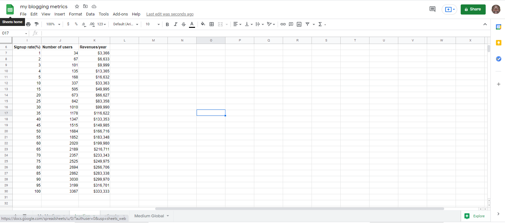
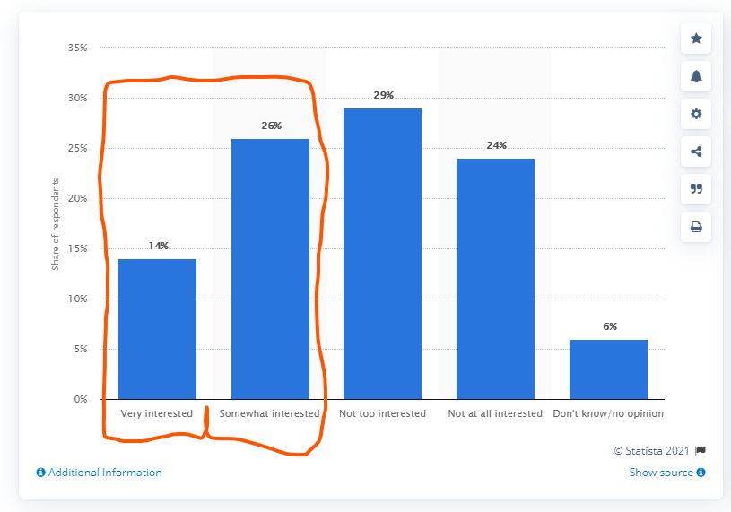

This Journalistic tech-enabled and data-driven platform
From voice to text through video all data about journalistic coverage

From voice to text through video, this tech-enabled platform seeks to track and find the words that matter and the people who care. I have spent many years before being interested in the journalistic field and this course I am taking in Coursera is reminding me how dare journalism is important for the world and mostly for the tech industry. I have been writing about tech journalism and showing how its coverage impact the success of tech ventures and have made a more extensive analysis resumed by these short articles below
A simple article published on Medium (here) helped me make some assumptions about the audience of this journalistic tech-enabled platform. From these 65000 persons, the guess is that only 5% will be interested in this tech-enabled platform what represents a market size of 3367 potential users. If the subscription price of this SaaS journalistic tech-enabled platform is $99 here are the respective annual revenues given a defined signup rate

in 2015 there were about 32,900 full-time journalists in the US and this number has certainly increased now in 2021. But with the connected world into which we are living now, Journalism has been profoundly transformed and there are many people like me and maybe you contributing content online who can be qualified as amateur journalists. These 65000 that I was writing about in the paragraph above are people like that who daily are writing about their opinions, ideas, and knowledge. Then this Journalistic Tech-enabled platform is first targeting this set of people before trying to reach the professional journalists working for Washington Post or TechCrunch and other professional media firms.
There is this fact that the exponential growth of online content accompanied by the rise of concerns about fake news and content make people more and more interested in knowing about journalism not only for contributing to this field but for knowing how information is processed in order for them to filter out the truths from the fakes. Adults (40%) are those who are more and more interested in the journalistic field as shown by this 2017 chart

$300,000 of annual revenues is something achievable by this journalistic tech-enabled platform that’s why have started building this simple minimum viable platform that will help you who are interested in this platform to engage yourself with it and get value from it while helping me improve it with your feedback and features requests.
Now that it has been almost one year that I am running alone a publishing startup and have written some drafts of data-driven books, it sounds like this will be the first platform in production of this publishing startup but still, no fund to event buy this domain and cloud hosting space. Resources have always been scarce for me but I hope that it will never prevent me from writing and sharing with you like how I have done with this Article.